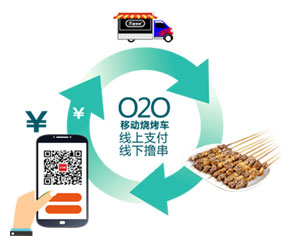
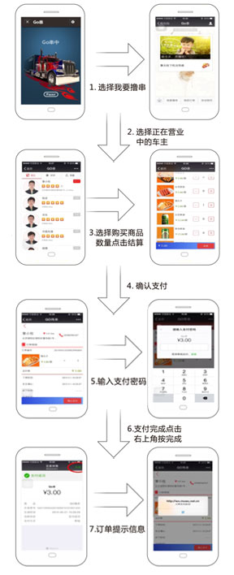
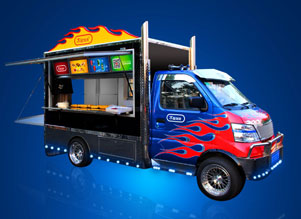

基于市政管理的三大痛点：
1.地摊沉疴，积重难返；2.失业问题，难以化解；3.产业落后，创新无门。
以下就是我们的三大解决之道：
1.升级地摊，美一方水土；2.安置就业，富一方人；3.产业创新，育一方人。
基于互联网思维的O2O无烟烧烤车
O2O无烟烧烤车的软件和硬件
1. 基于微信H5开发的闭环销售系统

2. 结构设计巧妙一车多用

3. 无烟烧烤车的技术原理
湿式油烟净化技术，没有机械式油烟净化技术对微米数量级油烟颗粒净化效率的限制，基本上对0.1微米数量级的颗粒仍然有较高的净化效率。湿式油烟净化器可以将油烟温度降低至接近环境温度，同时，能对油烟中的燃烧废气、气味等分子态的污染物进行较彻底的净化，抛开其它因素，从综合净化能力和降低净化过程二次污染角度来看，湿式油烟净化技术是工业油烟净化的最佳手段！
其具备以下特点：
1、油烟等有机污染物在紫外线光束及臭氧的协同作用下，被完全分解氧化，全部变为棕榈酸等有机成分和水，同时祛除油烟异味、消毒杀菌。
2、排烟罩内、风道、风机、叶片等，在紫外线和臭氧的作用下，能保持洁净，无油垢、免维护、免清洗、消除火灾隐患，可延长风机的使用寿命。
3、本设备使用寿命长，运行成本低，净化效率高，操作简单。不改变厨房结构，安装快捷，不产生二次污染。
4、无噪音，更符合环保理念。

O2O无烟烧烤车的比较优势
-
高科专利 专家团队
木屋烧烤历经三年时间，组建中科大专家团队，自主研发O2O产业线，百分百专利无二项目。
-
资金雄厚 后盾强大
木屋烧烤2014年营业额2.5亿，同年9月28日获天图资本1亿元风投，这是木屋烧烤的A轮融资。
-
中央厨房 集约加工
木屋烧烤斥资二千万打造京深两地中央厨房，每日可供应200家木屋门店。在中国烧烤行业一时无两